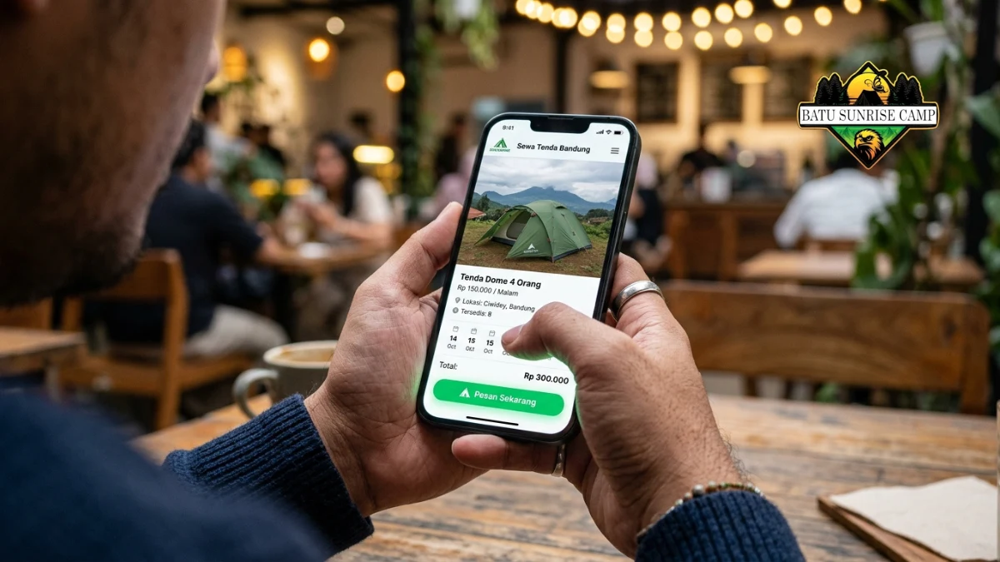

Pesan tenda camping adalah proses memilih, membandingkan, dan memesan tenda untuk kebutuhan berkemah, baik lewat sewa harian maupun pembelian di toko outdoor atau daring.
Apa Itu Pesan Tenda Camping?
Pesan tenda camping adalah kegiatan memesan unit tenda, baik untuk disewa maupun dibeli, guna digunakan saat kegiatan berkemah di gunung, pantai, atau area terbuka lainnya.
Istilah ini mencakup dua jalur utama: sewa tenda camping dan beli tenda camping. Sewa tenda camping cocok untuk pengguna yang jarang berkemah, sementara beli tenda camping lebih sesuai untuk aktivitas outdoor yang rutin.
Aktivitas camping dan mendaki disebut terus menjadi salah satu gaya hidup favorit masyarakat Indonesia, dengan tenda menjadi salah satu perlengkapan yang paling banyak dicari sepanjang 2026 (TIMES Indonesia, 2026).
Peningkatan minat ini membuat proses pemesanan tenda semakin banyak dilakukan lewat platform digital selain datang langsung ke toko outdoor.
Bagi pemula, penting memahami bahwa memesan tenda tidak sekadar soal harga termurah, tetapi juga soal kesesuaian kapasitas, medan, dan kondisi cuaca di lokasi camping yang dituju.
Mengapa Proses Pesan Tenda Camping Penting Diperhatikan?
Proses pesan tenda camping penting diperhatikan karena kesalahan pemilihan tenda dapat memengaruhi keselamatan, kenyamanan, dan pengalaman berkemah secara keseluruhan.
Tenda bukan sekadar tempat berlindung, melainkan juga pelindung utama dari hujan, angin, dan suhu dingin saat bermalam di alam terbuka.
Tenda yang tidak sesuai kapasitas dapat membuat ruang gerak terbatas, sementara tenda dengan bahan tidak waterproof berisiko membuat perlengkapan basah saat hujan turun.
Selain itu, memesan tenda dari penyedia yang tidak jelas kondisinya berisiko menimbulkan kerusakan di tengah perjalanan, seperti tiang patah atau ritsleting macet.
Durasi menginap wisatawan di destinasi wisata alam Indonesia tercatat meningkat lebih dari 15 persen sepanjang 2025 dibandingkan tahun sebelumnya (Media Indonesia, 2026).
Yang secara tidak langsung menunjukkan makin tingginya kebutuhan akan perlengkapan bermalam seperti tenda camping yang layak dan aman digunakan dalam waktu lebih panjang.

Proses pemesanan tenda camping online yang praktis melalui platform digital untuk kebutuhan berkemah.
Bagaimana Cara Pesan Tenda Camping yang Tepat?
Cara pesan tenda camping yang tepat adalah menentukan kebutuhan (sewa atau beli), memeriksa kapasitas dan spesifikasi, membandingkan harga, lalu melakukan pemesanan lewat platform tepercaya.
Berikut langkah umum yang bisa diikuti:
- Tentukan tujuan penggunaan tenda, apakah untuk mendaki gunung, camping keluarga, atau kegiatan komunitas.
- Tentukan kapasitas tenda sesuai jumlah orang yang akan menggunakan, dengan mempertimbangkan ruang tambahan untuk tas dan perlengkapan.
- Cek spesifikasi bahan, termasuk lapisan waterproof, ventilasi, dan berat tenda jika akan dibawa mendaki.
- Bandingkan opsi sewa dan beli berdasarkan frekuensi penggunaan dan anggaran yang tersedia.
- Pilih penyedia atau toko dengan ulasan jelas dan kebijakan pengembalian atau garansi yang transparan.
- Lakukan pemesanan lebih awal, terutama pada musim liburan atau akhir pekan panjang, karena stok tenda populer cenderung cepat habis.
Untuk panduan langkah demi langkah yang lebih rinci, dapat dilihat pada artikel cara pesan tenda camping online.
Apa Saja Jenis Tenda Camping yang Umum Dipesan?
Jenis tenda camping yang umum dipesan meliputi tenda dome, tenda tunnel, tenda keluarga, dan tenda ultralight sesuai kebutuhan dan medan penggunaan.
- Tenda dome: bentuk kubah, populer untuk pendakian karena ringan dan mudah didirikan.
- Tenda tunnel: bentuk memanjang dengan ruang lebih luas, cocok untuk camping keluarga di area datar.
- Tenda keluarga: berkapasitas besar, biasanya digunakan untuk camping santai di area perkemahan bawah.
- Tenda ultralight: didesain seringan mungkin, umum dipilih pendaki jarak jauh yang mengutamakan bobot tas.
Pemilihan jenis tenda sebaiknya disesuaikan dengan medan tujuan. Area berangin seperti puncak gunung umumnya membutuhkan tenda dengan struktur lebih kokoh, sedangkan area datar dan terlindung dapat menggunakan tenda tunnel atau keluarga yang lebih luas.
Faktor Apa Saja yang Perlu Dicek Sebelum Memesan Tenda Camping?
Faktor yang perlu dicek sebelum memesan tenda camping meliputi kapasitas, bahan waterproof, berat, kemudahan pemasangan, dan kelengkapan aksesori pendukung.
Kapasitas tenda idealnya dipilih satu tingkat lebih besar dari jumlah pengguna riil, agar tersedia ruang untuk tas dan perlengkapan.
Bahan waterproof biasa diukur dengan satuan tekanan air (water column), semakin tinggi angkanya umumnya semakin tahan terhadap hujan deras.
Berat tenda penting diperhatikan khususnya untuk kegiatan mendaki, karena tenda yang terlalu berat dapat menambah beban perjalanan secara signifikan.
Selain itu, periksa kelengkapan aksesori seperti flysheet, pasak, dan tiang cadangan. Penyedia sewa yang baik umumnya menyertakan daftar kelengkapan secara rinci sebelum barang dikirim atau diambil, sehingga pengguna dapat memastikan tidak ada komponen yang hilang.
Panduan lebih lengkap mengenai kriteria pemilihan dapat dibaca pada artikel tips memilih tenda camping sebelum pesan.
Apa Kesalahan Umum Saat Pesan Tenda Camping?
Kesalahan umum saat pesan tenda camping adalah tidak mengecek kapasitas riil, mengabaikan ketahanan air, dan memesan mendadak tanpa cadangan waktu.
Beberapa kesalahan yang sering terjadi antara lain:
- Memesan tenda dengan kapasitas pas-pasan tanpa mempertimbangkan ruang untuk tas dan perlengkapan.
- Tidak menanyakan kondisi fisik tenda, seperti ada tidaknya kebocoran pada flysheet.
- Memesan di menit-menit akhir sehingga pilihan tenda menjadi terbatas, terutama pada musim liburan.
- Tidak membandingkan harga antar penyedia sehingga membayar lebih mahal dari yang seharusnya.
- Mengabaikan kebijakan pengembalian dan denda keterlambatan saat menyewa tenda.
Menghindari kesalahan-kesalahan ini dapat membuat proses pemesanan tenda lebih efisien dan mengurangi risiko kendala di lokasi camping.
Berapa Biaya Pesan Tenda Camping?
Biaya pesan tenda camping bervariasi tergantung kapasitas, merek, dan durasi sewa, dengan sewa harian umumnya lebih hemat untuk penggunaan sesekali dibandingkan membeli tenda baru.
Biaya sewa biasanya dihitung per hari atau per unit perjalanan, sementara pembelian tenda merupakan investasi jangka panjang yang lebih menguntungkan bagi camper rutin.
Selain harga dasar, perlu diperhitungkan juga biaya tambahan seperti denda keterlambatan, biaya pembersihan, atau kompensasi jika terjadi kerusakan selama pemakaian.
Rincian estimasi biaya dan perbandingan sewa versus beli dapat dilihat pada artikel biaya sewa tenda camping.
Bagaimana Cara Membandingkan Penyedia Sebelum Pesan Tenda Camping?
Cara membandingkan penyedia sebelum pesan tenda camping adalah mengecek ulasan pengguna, kelengkapan unit, kebijakan sewa, dan kejelasan biaya tambahan.
Penyedia yang tepercaya umumnya mencantumkan foto kondisi tenda secara jelas, memberikan informasi kapasitas dan berat secara akurat, serta memiliki kebijakan pengembalian yang transparan.
Ulasan dari pengguna sebelumnya juga dapat menjadi indikator kualitas layanan, termasuk ketepatan waktu pengiriman dan kondisi barang saat diterima.
Untuk kebutuhan komersial atau kelompok besar, sebaiknya hubungi penyedia lebih awal untuk memastikan ketersediaan stok, terutama menjelang akhir pekan panjang atau musim liburan sekolah.
Kesimpulan
- Tentukan dulu kebutuhan, apakah sewa atau beli tenda, sebelum membandingkan harga.
- Perhatikan kapasitas, bahan waterproof, dan berat tenda sesuai medan tujuan camping.
- Pesan lebih awal untuk menghindari kehabisan stok, terutama pada musim liburan.
- Bandingkan beberapa penyedia berdasarkan ulasan, kelengkapan unit, dan kebijakan biaya tambahan.
- Simpan bukti pemesanan dan cek kondisi tenda saat diterima untuk menghindari sengketa di kemudian hari.